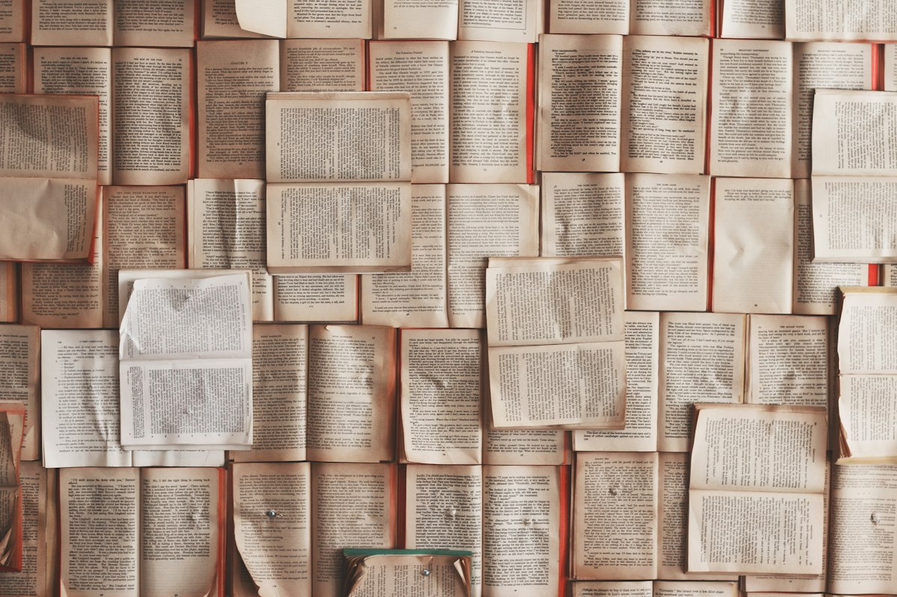
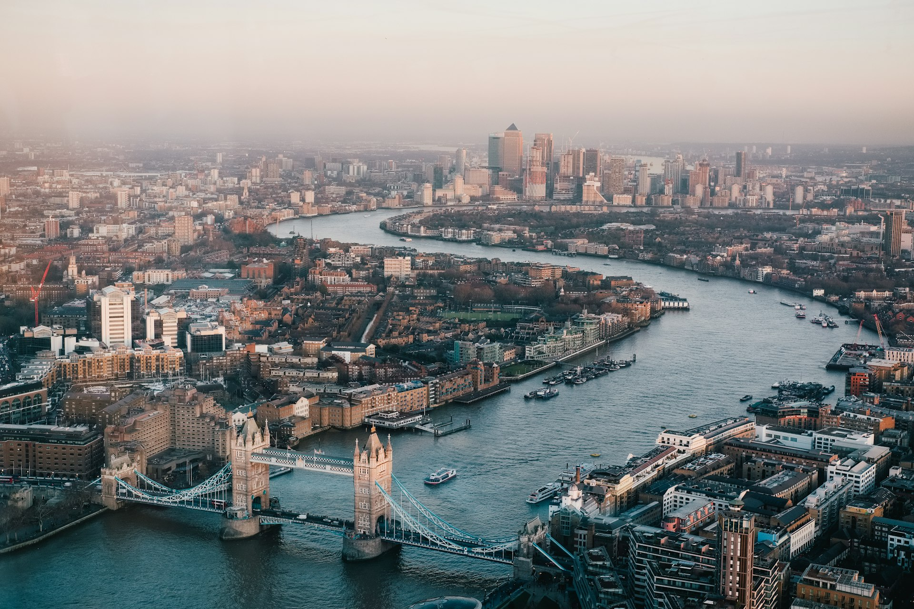

Cabinet I
The Fog of Westminster
Facing leaf: Baker Street Gaslight
The lamps along the bridge gutter in a rhythm, as if the pavement were breathing.
The Midnight Gazette
Return to the parlorNo. 114 · Baker Street · November 1890
The parchment yielded. For a moment the gaslight bent the wrong way, and then you were through — inside the rooms the grimoire only promised.
On a foggy eve in November 1890, the gas lamps of Baker Street flickered as the veil between worlds grew thin. A card had been left on the mantel of the Midnight Gazette. It was plain until it was touched.
What followed was not a trick of the hand. The card remembered a street the fog had swallowed, and the street remembered a book. These cabinets are that book, taken down and set out. Open a plate to read the leaf. When you are finished, the parlor is still there.
The cabinets
Six leaves survived the riffle. Each one still answers if you ask it plainly.
Cabinet I
Facing leaf: Baker Street Gaslight
The lamps along the bridge gutter in a rhythm, as if the pavement were breathing.

Cabinet II
Facing leaf: The Alchemist's Seal
A ledger of names the fog lifted off the calling-card tray.

Cabinet III
Facing leaf: a plate made long after
Tide tables annotated in a hand no one at the Gazette admits to.

Cabinet IV
Facing leaf: Obsidian Oracles
A glass that reflects the room a minute behind itself.

Cabinet V
Facing leaf: Transmutation
The road continues after the gate. The map ends before it.
Cabinet VI
Facing leaf: Spirits of the parlor
The leaf you turned to arrive. It is still warm.
It does not close behind you. It only grows quiet. The card is on the mantel when you want it turned again.